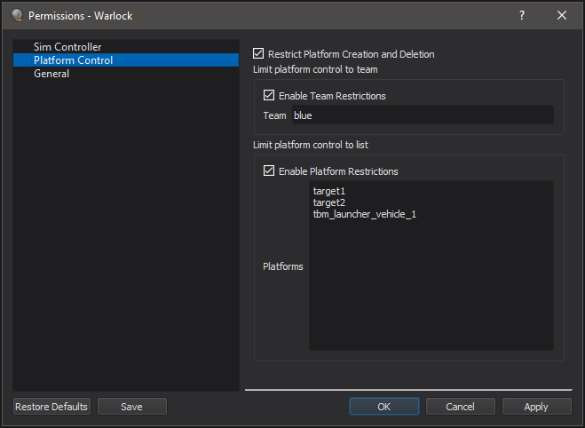

Permission Manager - Warlock¶
The Permission Manager dialog displays information about ability of the user to modify Warlock and the simulation. This allows a wargame lead to control which teams are visible and which platforms a user may control.
How to Use¶
The Permission manager dialog can be accessed via the Options menu within Warlock. Once the wargame lead has selected the desired permissions, use the Save button to save a permissions file. To load a permission file, use the command line option “-permission_file <filename>”.
Note
When a permission file is loaded, the user will be unable to modify permissions.
Permissions¶
Permissions are split into different categories.
Sim Controller
Enable Simulation Control - This controls whether the user can control the simulation which includes Pause, Run, Restart, and actions that control time.
Platform Controller
Restrict Platform Creation and Deletion - This controls whether a user is allowed to create new platforms or delete existing platforms.
Limit Platform Control to Team - If this option is enabled, a user will only be able to control/modify platforms on the specified team.
Limit Platform Control to List - If this option is enabled, a user will only be able to control/modify platforms whose name in the list.
General
Lock File Loading - This prevents the user from navigating the file system either to open or save a file.
Lock Team Visibility - This prevents the user from being able to change what team is visible.
Plugins¶
Plugins may provide additional permissions and those will be displayed within the Permission Manager dialog.